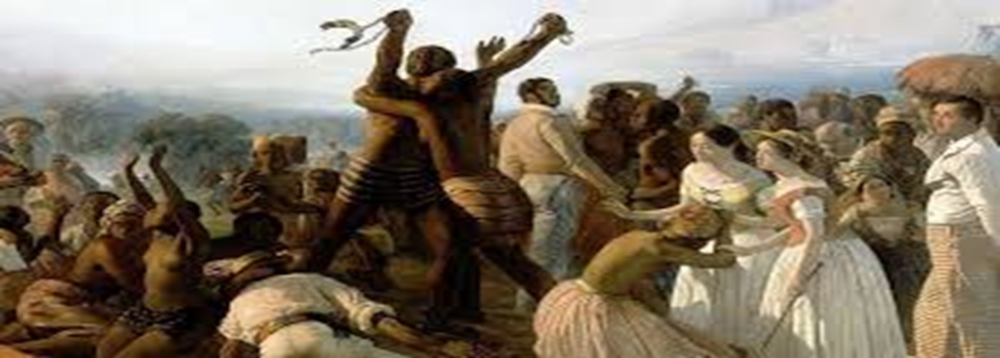

SIMBOLISMO
 O Simbolismo (1893 – 1902) introduziu uma nova sensibilidade na poesia brasileira, com ênfase na subjetividade, na espiritualidade e na musicalidade.
Cruz e Sousa é considerado o principal poeta simbolista do Brasil, trazendo à tona temas metafísicos e sensoriais. /P>
O Simbolismo (1893 – 1902) introduziu uma nova sensibilidade na poesia brasileira, com ênfase na subjetividade, na espiritualidade e na musicalidade.
Cruz e Sousa é considerado o principal poeta simbolista do Brasil, trazendo à tona temas metafísicos e sensoriais. /P>
PRINCIPAIS AUTORES-
Cruz e Souza (1861-1898): Conhecido por sua musicalidade e temas sensuais e espirituais. Obras principais incluem "Missal", "Broquéis" e "Últimos Sonetos".
Alphonsus de Guimarães (1870-1921): Sua obra é marcada pela sensibilidade e religiosidade, tratando de amor, solidão e morte. Destaque para "Setenário das dores de Nossa Senhora" e "Dona Mística".
Augusto dos Anjos (1884-1914): Reconhecido por explorar temas sombrios e existenciais, seu livro "Eu" é uma de suas obras mais conhecidas. Chamado de "Poeta da morte".
CARACTERISTICAS
o Simbolismo é que, embora tenha se inspirado em movimentos como o romantismo e o parnasianismo, ele se distanciou ao focar na subjetividade e no inconsciente. Os simbolistas buscavam musicalidade na poesia, utilizando sonoridades que tornavam os versos quase musicais, além de empregarem imagens oníricas e místicas, influenciados pelo impressionismo. Essa busca pela essência das emoções fez do simbolismo uma corrente literária inovadora.
